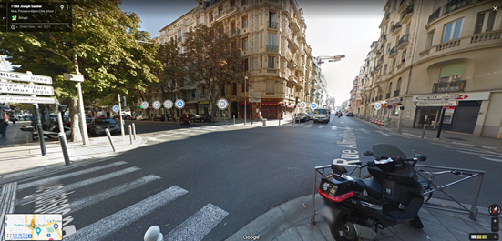

Piste cyclable
Dans notre projet de prolongation du réseau cyclable, nous avons rajouté pour un total de 15 km de voies cyclable dont un peu plus de 3 km de pistes cyclables. Le choix des différentes rues n’a pas été laissé au hasard, nous avons décidé de prolonger la piste existante sur Gambetta pour ensuite continuer sur le Boulevard Joseph Garnier. Les voies continuent au nord pour permettre au centre-ville de s’étendre jusque vers le Ray mais également jusqu’à Pasteur connectant au passage Valrose et Cimiez au reste du réseau. Ces lieux sont des zones a hautes densités, il en devient nécessaire qu’elles communiquent avec le reste de la ville. On ne laisse pas non plus Saint-Roch de côté puisque nos voies cyclables se repique sur les voies existantes en passant par ce quartier de Nice.
Zone piétionne
Pour finir, nous avons prévus dans notre projet d’aménagement, la création d’une zone piétonne sur le Boulevard Joseph Garnier. En effet venant compléter la piste cyclable que l’on a prévu d’installer, cette zone piétonne permettrait aux différents commerces d’être encore plus accessible qu’à l’époque. Étant un Boulevard à 4 voies, il devient l’endroit idéal après la création de la dernière zone au niveau de Gambetta. En outre, cette zone serait reliée à la Gare du Sud qui est une zone d’affluence possédant des lieux de restauration mais également un cinéma. De plus des bornes vélo bleu y existent ce qui permettrait aux touristes de pouvoir y accéder en toute rapidité et simplicité tout en profitant de l’air frais du climat méditerranéen. Les divers commerces qui aujourd’hui sont « abandonnés » pourront désormais reprendre du service et redévelopper une forte activité commerciale dans le secteur.
